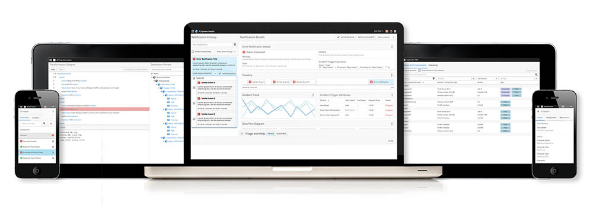
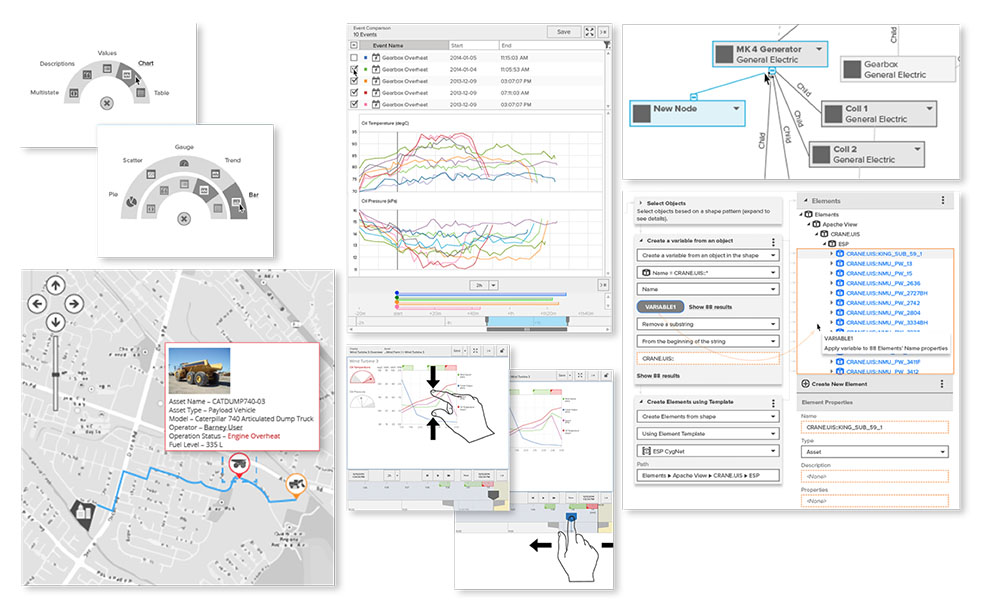

The challenge
Legacy user interfaces, some nearly 20 years old, had become an obstacle to the client's growth. No two of their products' interaction models had anything in common with each other – their customers had to learn each product's conventions from scratch.
To meet changing expectations, the client needed their products to become an integrated suite and deliver value on a new generation of devices, especially small-screen touch. Moving from product islands toward a holistic design language required unifying interactions across a diverse set of products.
The client asked me to design a comprehensive UI framework to unify their fractured product experiences. This required more than a simple off-the-shelf template – their applications were filled with bespoke interactions and tailored controls that a commercial UI framework wouldn't handle elegantly.

What they had
Here's an example of what their products looked like when I started: half a dozen different UI stacks, from Win32 to Silverlight, all predating modern, cross-platform, touch-friendly conventions.
Understanding user needs
I became very familiar with the client's product suite through my experience working with them and interacting with their customers over several years. After countless end-user interviews, I formed a solid understanding of their users' needs.
Creating consensus with rapid iteration
I quickly took a representative set of screens across several products from low fidelity sketches to high fidelity prototypes to prove the validity of the design conventions. This was an essential step to arrive at agreement across the various product teams – each team needed to know that the new framework wouldn't have a negative impact on their product's interactions.
Solving interaction challenges
To improve consistency across products, I found opportunities to harmonize disparate user interactions throughout the product suite. In many cases this required inventing novel interactions that didn't exist in off-the-shelf user interface controls. These custom interactions drove many of the UI framework's technical requirements, especially around the UI extensibility model.

Design for modularity
I designed a visual language to complement the framework architecture and pair perfectly with the framework's requirements:
- Works in both keyboard + mouse and multi-touch environments with minimal adaptation
- Offers flexible whitespace options to accommodate both data-dense and data-sparse screens
- Includes a runtime extensibility model to ensure seamless integration of third-party controls
- Requires minimum processing power and bandwidth to ensure adequate performance on older devices
- Supports creating additional themes beyond the default light and dark themes I provided
- 100% vector implementation that supports both server-side and client-side rendering
Documentation
I provided full UI specifications and design-time tooling support, including a matching design library for UX and UI designers in Sketch format. I also provided as a design guidebook that describes not just what the framework contains, but when to choose one interaction pattern over another – for example, when to use modal dialogs and when to avoid them.
I also wrote and illustrated engineering documentation to ensure both future engineers and future designers would have a shared understanding of how to best make use of the UI framework in their products.
Beyond the written documentation, I provided the engineering team with architectural and interaction guidance to ensure that the final product met the product teams' expectations. I reviewed developer check-ins, helping guiding the direction the codebase took, prototyped screens with the emerging codebase to assess real-world performance, and communicated progress with stakeholders across the organization.
Final Delivery
The end result was just what the client had set out to achieve: a harmonization of user interface paradigms and styles across a wide variety of products that carries the product suite into the next generation.